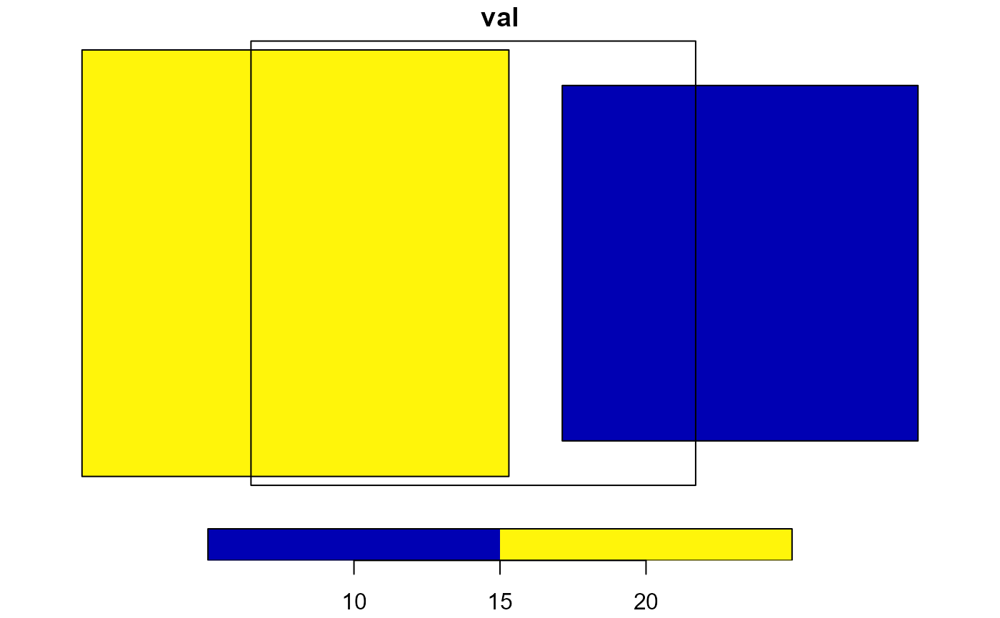

R/calculate_area_intersection_weights.R
calculate_area_intersection_weights.RdReturns the fractional percent of each feature in x that is covered by each intersecting feature in y. These can be used as the weights in an area-weighted mean overlay analysis where x is the data source and area- weighted means are being generated for the target, y.
This function is a lightwieght wrapper around the functions aw_intersect aw_total and aw_weight from the areal package.
calculate_area_intersection_weights(x, y, normalize, allow_lonlat = FALSE)sf data.frame source features including one geometry column and one identifier column
sf data.frame target features including one geometry column and one identifier column
logical return normalized weights or not. See details and examples.
boolean If FALSE (the default) lon/lat target features are not allowed. Intersections in lon/lat are generally not valid and problematic at the international date line.
data.frame containing fraction of each feature in x that is covered by each feature in y.
Two versions of weights are available:
`normalize = FALSE`, if a polygon from x is entirely within a polygon in y, w will be 1. If a polygon from x is 50 will be two rows, one for each x/y pair of features with w = 0.5 in each. Weights will sum to 1 per SOURCE polygon if the target polygons fully cover that feature. `normalize = TRUE`, weights are divided by the target polygon area such that weights sum to 1 per TARGET polygon if the target polygon is fully covered by source polygons.
b1 = sf::st_polygon(list(rbind(c(-1,-1), c(1,-1),
c(1,1), c(-1,1),
c(-1,-1))))
b2 = b1 + 2
b3 = b1 + c(-0.2, 2)
b4 = b1 + c(2.2, 0)
b = sf::st_sfc(b1, b2, b3, b4)
a1 = b1 * 0.8
a2 = a1 + c(1, 2)
a3 = a1 + c(-1, 2)
a = sf::st_sfc(a1,a2,a3)
plot(b, border = 'red')
plot(a, border = 'green', add = TRUE)

sf::st_crs(b) <- sf::st_crs(a) <- sf::st_crs(5070)
b <- sf::st_sf(b, data.frame(idb = c(1, 2, 3, 4)))
a <- sf::st_sf(a, data.frame(ida = c(1, 2, 3)))
sf::st_agr(a) <- sf::st_agr(b) <- "constant"
calculate_area_intersection_weights(a, b, normalize = FALSE)
#> # A tibble: 4 × 3
#> ida idb w
#> <dbl> <dbl> <dbl>
#> 1 1 1 1
#> 2 2 2 0.5
#> 3 2 3 0.375
#> 4 3 3 0.625
calculate_area_intersection_weights(a, b, normalize = TRUE)
#> # A tibble: 4 × 3
#> ida idb w
#> <dbl> <dbl> <dbl>
#> 1 1 1 1
#> 2 2 2 1
#> 3 2 3 0.375
#> 4 3 3 0.625
calculate_area_intersection_weights(b, a, normalize = FALSE)
#> # A tibble: 5 × 3
#> idb ida w
#> <dbl> <dbl> <dbl>
#> 1 1 1 0.64
#> 2 2 2 0.32
#> 3 3 2 0.24
#> 4 3 3 0.4
#> 5 4 NA NA
calculate_area_intersection_weights(b, a, normalize = TRUE)
#> # A tibble: 5 × 3
#> idb ida w
#> <dbl> <dbl> <dbl>
#> 1 1 1 1
#> 2 2 2 0.571
#> 3 3 2 0.429
#> 4 3 3 1
#> 5 4 NA NA
#a more typical arrangement of polygons
b1 = sf::st_polygon(list(rbind(c(-1,-1), c(1,-1),
c(1,1), c(-1,1),
c(-1,-1))))
b2 = b1 + 2
b3 = b1 + c(0, 2)
b4 = b1 + c(2, 0)
b = sf::st_sfc(b1, b2, b3, b4)
a1 = b1 * 0.75 + c(-.25, -.25)
a2 = a1 + 1.5
a3 = a1 + c(0, 1.5)
a4 = a1 + c(1.5, 0)
a = sf::st_sfc(a1,a2,a3, a4)
plot(b, border = 'red', lwd = 3)
plot(a, border = 'green', add = TRUE)
sf::st_crs(b) <- sf::st_crs(a) <- sf::st_crs(5070)
b <- sf::st_sf(b, data.frame(idb = c(1, 2, 3, 4)))
a <- sf::st_sf(a, data.frame(ida = c("a", "b", "c", "d")))
sf::st_agr(a) <- sf::st_agr(b) <- "constant"
# say we have data from `a` that we want sampled to `b`.
# this gives the percent of each `a` that intersects each `b`
(a_b <- calculate_area_intersection_weights(a, b, normalize = FALSE))
#> # A tibble: 9 × 3
#> ida idb w
#> <chr> <dbl> <dbl>
#> 1 a 1 1
#> 2 b 1 0.111
#> 3 c 1 0.333
#> 4 d 1 0.333
#> 5 b 2 0.444
#> 6 b 3 0.222
#> 7 c 3 0.667
#> 8 b 4 0.222
#> 9 d 4 0.667
# note that `w` sums to 1 where `b` completely covers `a`.
dplyr::summarize(dplyr::group_by(a_b, ida), w = sum(w))
#> # A tibble: 4 × 2
#> ida w
#> <chr> <dbl>
#> 1 a 1
#> 2 b 1
#> 3 c 1
#> 4 d 1
# We can apply these weights like...
dplyr::tibble(ida = unique(a_b$ida),
val = c(1, 2, 3, 4)) |>
dplyr::left_join(a_b, by = "ida") |>
dplyr::mutate(val = ifelse(is.na(w), NA, val),
areasqkm = 1.5 ^ 2) |> # area of each polygon in `a`
dplyr::group_by(idb) |> # group so we get one row per `b`
# now we weight by the percent of the area from each polygon in `b` per polygon in `a`
dplyr::summarize(new_val = sum( (val * w * areasqkm), na.rm = TRUE ) / sum(w * areasqkm))
#> # A tibble: 4 × 2
#> idb new_val
#> <dbl> <dbl>
#> 1 1 2
#> 2 2 2
#> 3 3 2.75
#> 4 4 3.5
# we can go in reverse if we had data from b that we want sampled to a
(b_a <- calculate_area_intersection_weights(b, a, normalize = FALSE))
#> # A tibble: 9 × 3
#> idb ida w
#> <dbl> <chr> <dbl>
#> 1 1 a 0.562
#> 2 1 b 0.0625
#> 3 2 b 0.25
#> 4 3 b 0.125
#> 5 4 b 0.125
#> 6 1 c 0.188
#> 7 3 c 0.375
#> 8 1 d 0.188
#> 9 4 d 0.375
# note that `w` sums to 1 only where `a` complete covers `b`
dplyr::summarize(dplyr::group_by(b_a, idb), w = sum(w))
#> # A tibble: 4 × 2
#> idb w
#> <dbl> <dbl>
#> 1 1 1
#> 2 2 0.25
#> 3 3 0.5
#> 4 4 0.5
# with `normalize = TRUE`, `w` will sum to 1 when the target
# completely covers the source rather than when the source completely
# covers the target.
(a_b <- calculate_area_intersection_weights(a, b, normalize = TRUE))
#> # A tibble: 9 × 3
#> ida idb w
#> <chr> <dbl> <dbl>
#> 1 a 1 0.562
#> 2 b 1 0.0625
#> 3 c 1 0.188
#> 4 d 1 0.188
#> 5 b 2 1
#> 6 b 3 0.25
#> 7 c 3 0.75
#> 8 b 4 0.25
#> 9 d 4 0.75
dplyr::summarize(dplyr::group_by(a_b, idb), w = sum(w))
#> # A tibble: 4 × 2
#> idb w
#> <dbl> <dbl>
#> 1 1 1
#> 2 2 1
#> 3 3 1
#> 4 4 1
(b_a <- calculate_area_intersection_weights(b, a, normalize = TRUE))
#> # A tibble: 9 × 3
#> idb ida w
#> <dbl> <chr> <dbl>
#> 1 1 a 1
#> 2 1 b 0.111
#> 3 2 b 0.444
#> 4 3 b 0.222
#> 5 4 b 0.222
#> 6 1 c 0.333
#> 7 3 c 0.667
#> 8 1 d 0.333
#> 9 4 d 0.667
dplyr::summarize(dplyr::group_by(b_a, ida), w = sum(w))
#> # A tibble: 4 × 2
#> ida w
#> <chr> <dbl>
#> 1 a 1
#> 2 b 1
#> 3 c 1
#> 4 d 1
# We can apply these weights like...
# Note that we don't need area in the normalized case
dplyr::tibble(ida = unique(a_b$ida),
val = c(1, 2, 3, 4)) |>
dplyr::left_join(a_b, by = "ida") |>
dplyr::mutate(val = ifelse(is.na(w), NA, val)) |>
dplyr::group_by(idb) |> # group so we get one row per `b`
# now we weight by the percent of the area from each polygon in `b` per polygon in `a`
dplyr::summarize(new_val = sum( (val * w), na.rm = TRUE ))
#> # A tibble: 4 × 2
#> idb new_val
#> <dbl> <dbl>
#> 1 1 2
#> 2 2 2
#> 3 3 2.75
#> 4 4 3.5